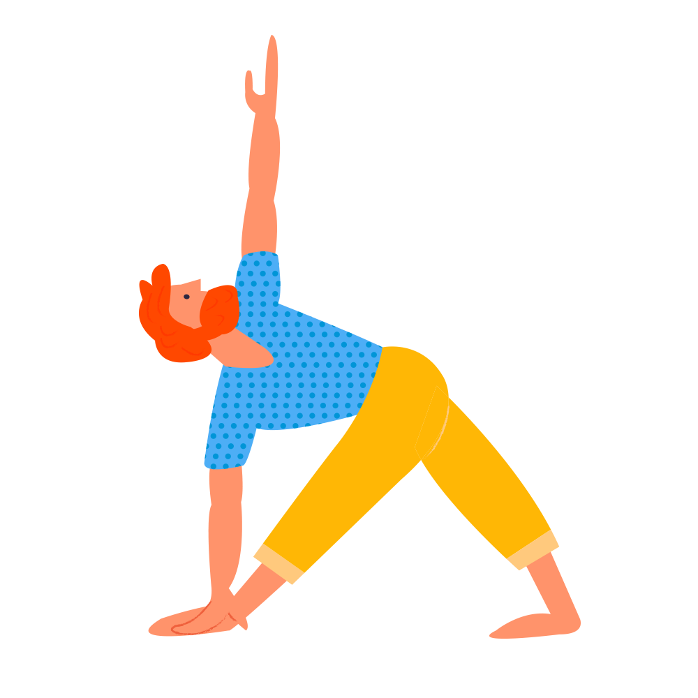

Triangle – Trikonasana

The Triangle is one of those postures that brings to your body many benefits. For example, it improves the flexibility of your spine; it helps with the alignment of your shoulders; it relieves back pain and stiffness in the neck area, but don’t forget you need to practice each posture on the left and right site – balancing your postures is very important. With the practice of this posture you will notice many improvements, but especially for your posture.